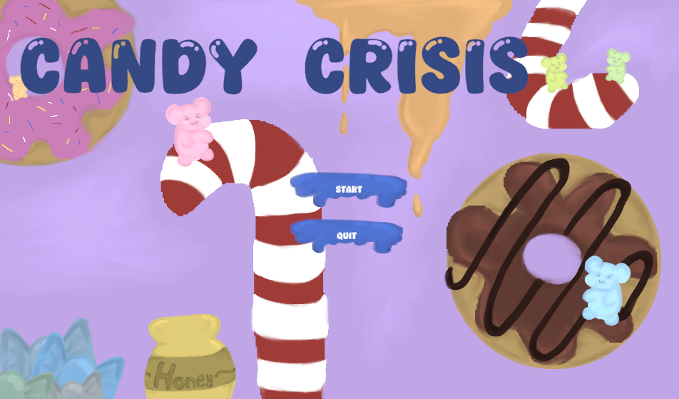

Game Design Case Study · Solo Project
Candy Crisis
A colourful 2D platformer built in Unity. My focus was not on adding as many mechanics as possible, but on making progression, navigation and important moments feel clear to players.
Gameplay preview · Video can be paused using the player controls.
01 / Overview
The game
Candy Crisis combines running, jumping, double jumping and ranged attacks with a playful candy-themed world. Players explore the level, find a key, unlock the path to the boss and complete the game by winning the final fight.
I worked on the game concept, mechanics, level design, enemy behaviour, boss encounter, interface, programming and pixel-art assets.
02 / Development Process
From first concept to finished game
I documented the development of Candy Crisis in three phases. Each phase had a different focus: establishing the core idea, developing and testing the playable experience, and refining the final version.
Concept & prototype
I defined the game concept, target audience, core mechanics and visual direction. Moodboards and design guidelines helped establish a consistent candy-inspired world, while an early prototype tested the basic gameplay.
Implementation & iteration
I developed the levels, enemies, key-and-door progression and boss encounter, then used early feedback to identify areas that needed clearer guidance and better balancing.
Playtesting & finalisation
I refined the MiniMap, adjusted level challenges and enemy placement, polished the interface and completed the final playable version.
03 / Concept & Art Direction
A sweet world with clear rules
The visual direction uses bright colours, rounded shapes and readable silhouettes. The boss encounter deliberately contrasts with this friendly world through a stronger sense of danger and tension.
Design goals
Accessible controls, clear objectives and a level structure that helps players understand where to go next.
Visual direction
Colourful candy-inspired environments, legible characters, a restrained interface and more dramatic cues during important moments.
The original research moodboards contain third-party reference images. They are not reproduced here; selected original screenshots or properly licensed references can be added later.
04 / Gameplay & Level Design
Building the player journey
Movement & combat
Running, jumping, double jumping and shooting provide the core actions for navigating obstacles and dealing with enemies.
Enemies & hazards
Patrolling enemies, rolling enemies and contact hazards create challenges along the route.
Progression
Finding the key and reaching the locked door lead players toward the final boss encounter.
Finale
The boss has its own health bar and attacks. A separate win scene makes completing the game feel like a clear achievement.
05 / Iteration & Playtesting
Feedback changed the design
Early playtests suggested that the core mechanics were understandable, but feedback also highlighted a navigation problem: in some vertical passages, players could not immediately tell whether the level continued upward or downward.
Instead of introducing another gameplay mechanic, I added a simple MiniMap. It shows the player’s position and the level’s direction, supporting orientation without taking over the screen.
Four documented playtests with different participants, lasting approximately 8–15 minutes each, helped me evaluate orientation, difficulty and overall game feel.
In the final version, the MiniMap also includes markers for important goals such as the key, the door and the boss. I revised jump challenges, enemy positions and boss balancing in response to testing.
Problem
Vertical level transitions were not always easy to read.
Design response
A minimal MiniMap to make the level structure and player position clearer.
Test feedback
Follow-up testing indicated that players understood the level structure more quickly and found vertical transitions clearer.
What I learned
Improving player guidance can make a bigger difference than adding more features.
06 / Polish & Reflection
Making the experience feel complete
I refined the presentation of key moments through interface elements, scene transitions and audio feedback. The win scene was also expanded with a small animation featuring Blue as an Easter egg after the boss fight.
“I learned that good game design is not about the number of features, but about what those features do for the player.”
Working on Candy Crisis helped me improve my Unity and UI workflow, and taught me to pay closer attention to player feedback, readability and scope.
07 / Design Documentation
Showing the work behind the game
My project documentation includes concept development, moodboards with source references, gameplay and level-design decisions, playtesting notes, and changes made during finalisation. These materials show how the design evolved rather than just presenting the finished game.
Concept & visual references
Early moodboards and design guidelines established the intended tone and visual consistency. Third-party reference images are not reproduced on this page.
Implementation & feedback
Gameplay systems, UI decisions, MiniMap changes and testing results document the move from prototype to final build.

University documents are not linked publicly because they contain personal academic details. Original artwork and screenshots can be added individually.
08 / Final Result
Play Candy Crisis
The result is a complete, playable 2D platformer with a candy-themed world, multiple enemy types, a boss fight and a clear ending.